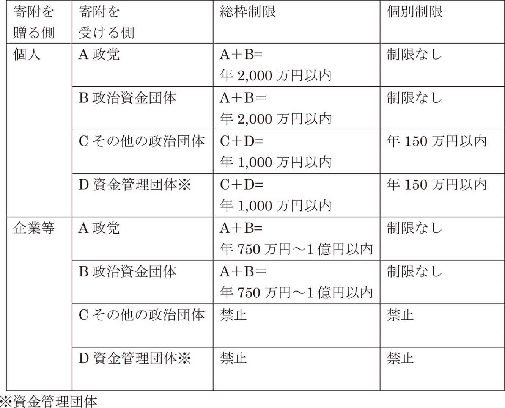
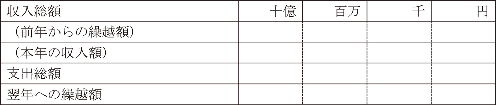
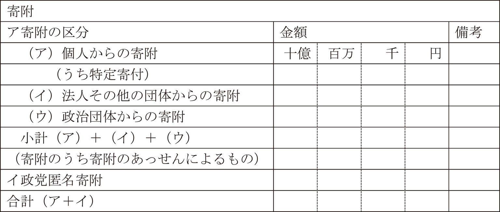
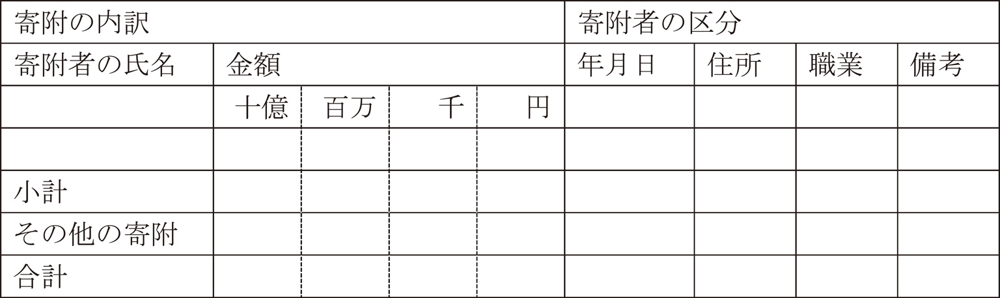
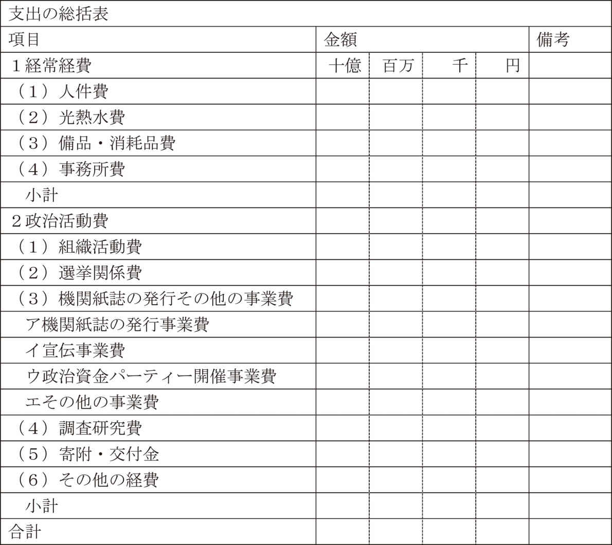
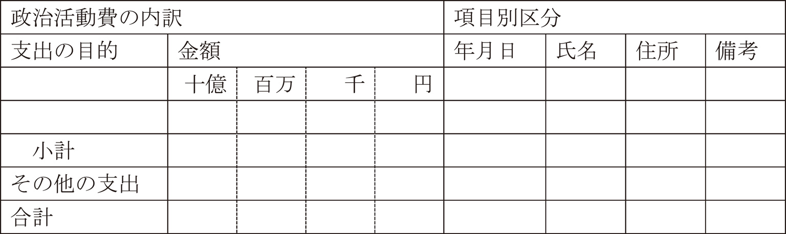
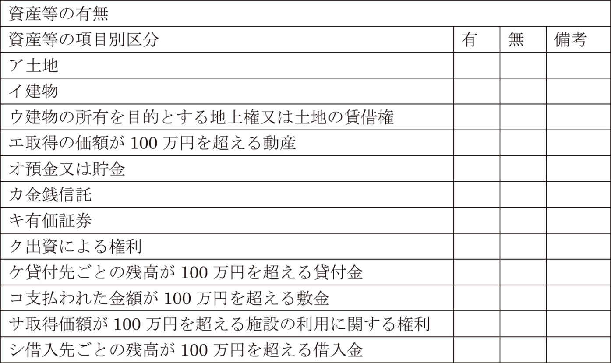
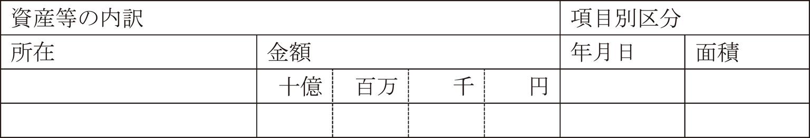
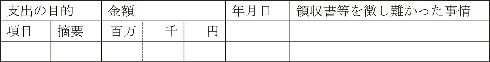

| 納税者のあなた、有権者のあなた、政治家を志すあなた、政治資金収支報告書を読んでみませんか。 | |
| 吉田りさ | |
| (2016) | |
納税者のあなた、
有権者のあなた、
政治家を志すあなた、
政治資金収支報告書を読んでみませんか。
吉田りさ
目次
最近、相続税対策が盛んです。
税制が改正され、基礎控除が減らされたり税率が引き上げられたりして、資産家とは程遠い庶民でも、都会に戸建の家でも持っていれば、多額の相続税を払う可能性が大きくなったことが原因です。
相続税対策には、子供や孫に生前贈与する方法や、借金をしてアパートやマンションを建てる方法などが、ノウハウ本で紹介されています。
贈与税の基礎控除や教育資金の非課税制度を利用して、子供や孫に財産を贈与すれば、その分相続財産が減るので相続税を少なくすることができます。
また、借金は相続財産から差し引かれるので、借金をすれば相続税を少なくすることができます。
さらに、土地の評価額は利用状況により異なり、更地より貸家建付地は評価額が下がるので、アパートやマンションを建てれば相続税を少なくすることができます。
なるほど、これらの方法は、うまくいけばお得な相続税対策です。
でも、何もかも思いどおりにうまくいく程この世は甘くはありません。
人は、この世に生まれた順にこの世を去るとは限りません。
子や孫に先立たれ、その連れ合いが他の人と再婚でもしたら、想定外の状況になってしまうかもしれません。
思いもよらぬことが起きるのが人生なのです。
借金をしてアパートやマンションを建てても、部屋が埋まるとは限りません。
空室が埋まらず賃料が思うように入らなければ、利息が雪だるまのように膨らんで借金が返せなくなるかもしれません。
相続税対策をしなくてはいけない程財産があったはずなのに、気がつけば長い長い老後の資金に困る状況になっているかもしれません。
思いどおりにいかないのが人生なのです。
思わぬことが起こったり、思いどおりにいかない時に、頼みの綱となるのは国の社会保障制度です。
国の社会保障制度の財源には私たち国民の税金も使われます。
節税対策も大切ですが、払うべき税金は払い、せっかく払った血税が正しく使われるように見守ることも大切です。
国の社会保障制度の内容は政治によって決まります。
日本の政治は議会制民主主義をとり、国民が選挙で選んだ政治家が議会を中心に行います。
私たち国民に与えられた選挙権を行使して、まともな政治家を選ぶことは大切です。
政治家は国民の幸せな生活にとって大切ですが、政治家の不正や不祥事は後を絶ちません。
政治家なんてどいつもこいつもろくでもないと文句を言うのは簡単ですが、選んだのは私たち国民です。
本当にどいつもこいつもろくでもないのなら、自分が政治家になったっていいのです。
日本の政治家は世襲制ではないのですから、誰でも政治家になれるのです。
国内政治だけでなく、世界に羽ばたくグローバルリーダーを目指したっていいのです。
日本は「経済一流・政治は三流」と言われてきましたが、世界の政治家を見渡せば、ならず者や偽善者など、ろくでもなさでは日本など到底かなうものではありません。
グローバルリーダーのハードルは実はかなり低いのかもしれません。
誠実で勤勉で道徳心のある日本人こそ、グローバルリーダーに向いているのかもしれません。
ノーベル賞やスポーツや芸術など、世界でトップレベルの日本人もたくさん出てきたのですから、政治の世界にもグローバルリーダーになるような、尊い志を持った政治家に早く出て来てほしいものです。
尊い志を持った政治家を選ぶことは大切ですが、言葉から本性を見抜くのは困難です。
選挙前は「国民の血税の無駄を許さない」と言っていたのに、当選したら公私混同で税金を使って贅沢し、「自分のお金の無駄を許さない」が実態だったとわかることもあるものです。
もし、本当に尊い志を持った政治家を選ぶことができたとしても、せっかくの尊い志は持ち続けてもらわなくては困ります。
尊い志を腐らせるのは、古今東西「色と金」です。
色についてはハニートラップを得意とする週刊誌にでも任せるとして、金については一億総活躍でしっかりチェックしたいものです。
色については誰もがお相手になるわけではありませんが、金については誰もが当事者になってしまう可能性があるのです。
気軽にもらったうちわや芝居見物が、支援していた政治家を追いつめることだってあるのです。
政治と金の問題なんて、情報力のあるマスコミじゃあるまいし、一般人がチェックできるわけないんですけど、と思われるかもしれませんが、実は誰でもチェックできるのです。
総務省のホームページにアクセスすれば、いつでもどこでも誰でもタダでチェックできるのです。
さすが、国民的アイドルのパパがトップだった総務省だけあって、とても国民的な省庁なのです。
総務省のホームページにアクセスし、「選挙・政治資金制度」をクリックすれば、政治資金収支報告書を誰でもチェックできるのです。
納税者のあなた、
せっかく払った血税を正しく使ってほしくありませんか。
有権者のあなた、
自分の清き一票が正しい選択だったか確かめたくありませんか。
政治家を志すあなた、
尊い志を失わないように、政治と金を研究したくありませんか。
そんな時は、政治資金収支報告書を読んでみましょう。
日本の幸せな未来のために。
公職選挙法が改正され、選挙権を有する者の年齢が満20歳以上から満18歳以上に引き下げられました。
これに伴い、高校生に政治や選挙に関する知識をまとめた副教材が配布され、主権者教育が行われることになりました。
これから社会に出る若者は、政治にはちょっとうるさい若者が増えてくるかもしれません。
私はかつて選挙に全く行かず、お米もあまり食べませんでした。
そんな私は、友人から「非国民」とからかわれたことがあります。
これから社会に出て来る政治にはちょっとうるさい若者が職場の部下や後輩になった時、飲み会の会話であまりに政治オンチな上司や先輩は、若者の心の中で「非国民」と思われているかもしれません。
総務省のホームページにアクセスすれば、総務省と文部科学省が作成した副教材「私たちが拓く日本の未来、有権者として求められる力を身につけるために」をいつでもどこでも誰でもタダで見ることができます。
これから社会に出て来る政治にはちょっとうるさい若者に「非国民」と思われないように、副教材をちらっと見ておくと、ちょっと安心かもしれません。
政治や選挙は奥が深い世界ですが、副教材や授業で学ぶ知識のほんのさわりをざっくりと、一緒に確認してみましょう。
・政治とは、社会集団において利害を調整して重要な課題を決定し、秩序を維持して統合を図るはたらきです。
・国家であれば、税金や教育や福祉や経済や外交や防衛などについて、法律・条令や予算で決定します。
・政治には、民主政治や独裁政治などがあります。
民主政治とは、人民の意思に基づいて行われる政治です。
民主政治の逆は独裁政治であり、統治者の独断によって行われます。
また、統治者と被統治者が身分で区分されていれば専制政治であり、反対者を投獄・拷問・処刑などの暴力的手段によって弾圧すれば恐怖政治です。
・政治というと自分と関係のない世界の話のような気がするかもしれませんが、社内政治という言葉があるように、身近な世界にも似たようなことがあるものです。
ワンマンの創業者社長の会社ならまさに独裁政治であり、役員は創業者一族で固めている会社なら専制政治であり、パワハラは当たり前のブラック企業なら恐怖政治のようなものです。
民主政治のありがたさが身をもって理解できます。
・なお、国にまつわる言葉には、民主主義、資本主義、立憲主義、共和制、全体主義などいろいろあって混乱しそうですが、それぞれ政治、経済、法律、身分、思想などの分野別に分けられます。
民主主義は政治体制を表す言葉で、民主政治・独裁政治などが含まれます。
資本主義は経済体制を表す言葉で、資本主義・社会主義・共産主義などが含まれます。
資本主義は私有財産が認められ資本家が労働者を使って利潤を追求し、社会主義は生産手段が共有され計画的な生産と分配が行われ、共産主義はさらにすべての私有財産が認められません。
立憲主義は政治権力が憲法に基づく体制であり、立憲主義の逆は絶対主義で絶対的な存在や価値観に支配される体制です。
共和制は国家元首が王などの君主ではない体制であり、共和制の逆は君主制で国家元首が王などの君主である体制です。
全体主義は全体の利益が個人の利益に優先するという思想で、全体主義の逆は個人主義で個人の利益が全体の利益に優先するという思想です。
・現代の先進国の多くでは民主政治が行われていますが、民主政治においては人民の意思を政治に反映させる方法として一般的に議会制民主主義がとられています。
・議会制民主主義とは、選挙で代表を選び、選ばれた代表による議会で政治的課題を審議し、最終的な意思決定は多数決による方法です。
間接民主制ともよばれます。
・間接民主制の逆は直接民主制であり、人民全体の集会を開いて政治的課題を議論し決定する方法です。
古代ギリシャの都市国家アテネや現代のスイスの一部の町や村などでは直接民主制を行っていますが、現代の大規模な国家では直接民主制を行うことは困難であり、一般的に間接民主制が行われています。
ただし、イギリスのＥＵ離脱や日本の憲法改正のように、国民にとって特別重要な事項については国民投票で直接決定することもあります。
・国の議会が国会ですが、国会といえば野次や居眠りが名物です。
「座布団一枚！」と言いたくなるような名人芸の野次もありますが、国会は国民に選ばれた代表による審議の場なのですから、英知を結集して真剣に最善の道を検討してほしいものです。
・選挙で選ばれた代表が政治家であり、政治的な考え方が同じ人の集団が政党です。
・政党とは、政治的な主義や主張が近い人達が結集し政治活動を行う集団です。
・議会制民主主義のもとでは、議会の多数派が政治を動かすので、政党を作り政権を握ることを目指します。
・政党は、政治方針を綱領として定めたり、具体的な政権公約（マニュフェスト）を示したりして人々に支持を訴え、選挙でより多くの議席を獲得することを目指して活動します。
・政党政治には、多党制・二大政党制・一党制がありますが、多党制の場合一党だけで議会の多数派を形成することが困難なため、政策などで合意できる複数の政党で連立政権を組織することがあります。
・政権を担う政党を与党といい、そうでない政党を野党といいます。
野党といえば、「まずは反対！理由は後から考える。」というスタンスがお約束のような政治家もいます。
期待を裏切らない野党魂も嫌いではありませんが、日本という同じ船に乗っているのですから、立場を超えて誠実に最善の道を検討してほしいものです。
・日本では議院内閣制をとり、議会の多数派となった政党が内閣を組織します。
・日本の政治体制は議会制民主主義をとっています。
また、三権分立制をとり、立法権は国会に行政権は内閣に司法権は裁判所に属します。
それぞれの機関が独立してその役割を果たすとともに、互いに抑制・均衡を図る仕組みとなっています。
・国会は立法府として法律や予算を制定する機関です。
衆議院と参議院の二院制で審議の慎重を期しており、意思決定は原則として両院の一致を必要とし、不一致の場合には両院協議会を開くことができます。
ただし法律案の議決など一定の場合には衆議院の優越が認められ、また予算については衆議院から審議する決まりです。
国会が活動する期間を会期といいますが、会期の終了までに可決に至らなかった議案は、次の会議で継続して審議することを議決しないかぎり廃案となります。
・内閣は行政府として国会で定められた法律や予算を実施する機関です。
行政の仕事は経済・交通・教育・外交・防衛など分野別に省庁などの行政機関が担っており、これを指揮・監督する最高機関が内閣です。
内閣は内閣総理大臣（首相）と国務大臣で組織され、内閣の意思は閣議とよばれる話し合いによって全員一致で決定されます。
内閣総理大臣は国会の議決で指名され、国務大臣は内閣総理大臣によって任命されます。
内閣を構成する各大臣を閣僚とよびます。
日本では、内閣総理大臣と国務大臣の過半数は国会議員の中から選ばれる議員内閣制をとっています。
また、衆議院には内閣に対する信任・不信任の決議をする権限が与えられています。
・裁判所は司法府として人々の権利や義務を守り秩序を明らかにする機関です。
法にもとづいて犯罪の有罪無罪や財産上の争いや行政の適否などの判断を行います。
・裁判官の任命や最高裁判所の長官の指名は内閣が行い、その職にふさわしくないと訴えられた裁判官の弾劾裁判は国会が行います。
・世界の国には途上国から先進国までいろいろな国があり、政治体制も長年にわたる内戦で政治的混乱が続いている国や独裁政治の国や宗教と政治が分離していない国や民主政治が確立した国などいろいろです。
民主政治の国においても、資本主義と社会主義・共和制と君主制などと相まって、政治体制はいろいろです。
・アメリカ合衆国は共和制の国であり国家元首は大統領です。
大統領は大統領選挙人を介する間接選挙という独特の方法により国民が選びます。
大統領は行政府の長であるとともに軍の最高司令官でもあり、強大な権限を持っています。
また、三権が厳格に分離されており、議員は閣僚になることができません。
・イギリスは君主制の国であり国家元首は国王です。
しかし、国王は政治的な権力を持たず議院内閣制をとっています。
ただし、議会は上院（貴族院）と下院（庶民院）に分かれており階級社会の名残が感じられます。
・中国は社会主義の国であり中国共産党が独裁する権力集中制をとっています。
国家の最高機関は全国人民代表大会ですが、個人や地方の組織は中国共産党が決めたことに従います。
・現代の世界の先進国では主流となっている民主政治ですが、ここまでの道のりには多くの人々の血と涙が流れています。
・民主政治の本場といえるヨーロッパでさえ、17世紀中頃までは国王や貴族による専制政治が行われていました。
しかし、産業が発展して市民階級が勃興すると、権利を求める市民階級の革命が起こりました。
・イギリスでは清教徒革命と名誉革命を経て、国民を主権者とする民主政治が確立しました。
・アメリカでは独立戦争を経て、イギリスの植民地から独立し民主政治を手に入れました。
・フランスではフランス革命を経て、王政が廃止され民主政治が成立しました。
・革命を経て成立した民主政治のもとでは、基本的人権と国民主権が基本理念とされましたが、当時は富裕な市民層だけに参政権が与えられ、貧しい人々や女性には権利が与えられていませんでした。
・貧しい人々や女性が参政権を手に入れて本来の民主政治が確立するまでには、参政権獲得運動などのさらなる苦難の歴史があるのです。
・日本では19世紀後半の明治維新まで、世襲制の将軍と大名が主従関係を結び、幕府と藩が支配する封建制度がとられていました。
・しかし、明治維新によって封建制度が廃止され、明治政府が成立し、大日本帝国憲法が制定されました。
・明治維新により民主政治の道を歩み始めた日本でしたが、第二次世界大戦が始まると日本も戦争に突入し、1945年にポツダム宣言を受諾して終戦するまで軍が政治を支配するようになりました。
・終戦に伴い連合国軍に占領された日本は、その指示のもと大日本帝国憲法を改正し、日本国憲法を制定しました。
・大日本帝国憲法では天皇が国の元首であり主権は天皇に属していましたが、日本国憲法では主権が国民に属することになりました。
・また、明治維新後も税金を一定以上納めていない人や女性には認められていなかった参政権が、一定の年齢に達したすべての男女に与えられることになりました。
・参政権とは、主権者としての国民が政治に参加する権利です。
参政権には議会に代表者を送る選挙権、選挙に立候補する被選挙権、最高裁判所裁判官の国民審査、国会が憲法改正を発議した時に国民の意思を問う国民投票、などがあります。
・民主政治の選挙においては、すべての一定年齢の男女に等しく選挙権を与える普通選挙、投票内容を明らかにしない秘密選挙、投票を平等に扱う平等選挙、有権者が直接公職者を選ぶ直接選挙、投票することを強制されない自由選挙、が基本です。
かつては民主政治の国においても、財産や納税額が基準に満たない者や女性には権利を与えない制限選挙が行われていましたが、現在では一定の年齢に達した国民全てに権利を与える普通選挙が民主政治の基本になっています。
民主政治の基本となった普通選挙ですが、その中身は国によって少し差があります。
例えば、選挙年齢は18歳以上が主流ですが、アラブ首長国連邦の25歳以上や、アルゼンチンの16歳以上など、国によって差があります。
また、選挙への参加は自由選挙が基本ですが、アメリカでは事前に有権者登録が必要だったり、オーストラリアでは棄権したら罰金が科される義務制だったり、国によって差があります。
・日本では、被選挙権は衆議院議員が満25歳以上、参議院議員が満30歳以上となっており、選挙権は戦後70年にわたり満20歳以上でしたが、平成28年6月から満18歳以上に引き下げられました。
・なお、国民投票の投票権は、投票日が平成30年6月20日までにある国民投票は満20歳以上、投票日が平成30年6月21日以降にある国民投票は満18歳以上となりました。
・衆議院議員は任期が4年ですが解散により選挙が行われることもあります。
参議院議員は任期が6年で3年ごとに半数を改選します。
・衆議院議員選挙は小選挙区制と比例代表制を併用した小選挙区比例代表並立制をとり、参議院議員選挙は選挙区制と非拘束名簿式比例代表制を併用しています。
・衆議院議員選挙の小選挙区制は全国295の選挙区でそれぞれ１人の議員を選びます。
衆議院議員選挙の比例代表制は全国11のブロックで政党名を投票し、得票に応じて各政党に議員数を割り当て、政党があらかじめ候補者につけた順位に従い選びます。
・参議院議員選挙の選挙区制は都道府県を基礎とした選挙区で1～5名の議員を選びます。
参議院議員選挙の非拘束名簿式比例代表制は、全国を1つの選挙区として政党名か政党の候補者名簿の中の個人名を投票し、政党名と個人名での得票を合算して各政党の当選議員数を決め、個人名での得票の多い順に選びます。
・選挙制度には選挙区制と比例代表制があり、選挙区制はさらに小選挙区制と大選挙区制に分けられますが、それぞれに長所と短所があります。
・小選挙区制は1つの選挙区から最も得票の多い1名を当選者とする方法であり、大政党に有利なため政党が少数の大政党に集約され二大政党になりやすい特徴があります。
よって、活発な政策論争が行われたり、有権者に政権を担当する政党を選択する機会を与えたりする点が長所ですが、議席に結びつかない死票が多くなり少数意見を汲み取りにくい点が短所です。
・大選挙区制は1つの選挙区から得票順に複数の当選者を選ぶ方法であり、少数政党でも当選する可能性が高くなるという特徴があります。
よって、死票が少なく少数意見を汲み取りやすい点が長所ですが、多党化しやすく政権が不安定になる恐れがある点が短所です。
・比例代表制は政党名で投票し得票に比例して各政党に議席を配分する方法であり、少数政党でも当選する可能性が高いという特徴があります。
よって、死票が少なく有権者の政党に対する支持が議席に反映する点が長所ですが、少数政党が乱立し連立政権が常態化して政権が不安定になる恐れがあ る点が短所です。
・憲法において法の下の平等が保障されていますが、各選挙区の議員定数や人口が異なるため、議員1人当りの有権者が多い選挙区では1票の価値が低く、議員1人当たりの有権者が少ない選挙区では1票の価値が高くなってしまい、有権者の1票の価値に格差が生じてしまいます。
1票の格差問題は憲法に反するとして訴訟が起こされるなど問題となっており、選挙区の区割改定などの解決策が模索されています。
・また、衆議院選挙において小選挙区と比例代表に重複立候補すると、選挙区選挙で落選した候補者が比例代表で当選者として復活するという、ホラー映画のゾンビのような状況が生じており、問題が指摘されています。
・選挙に関するルールは、公職選挙法で詳細に定めています。
・公職選挙法とは、国会議員や地方公共団体の長と議員の選挙について、選挙権・被選挙権・選挙区・選挙人名簿・選挙手続・選挙訴訟・選挙運動・罰則などを規定している法律です。
・昭和25年に公布され、選挙にまつわる問題が発生するたびにこれに対処するべく改正されてきました。
平成6年には大きな政治改革が行われ、公職選挙法も連座制などが大幅に強化されました。
連座制は、選挙候補者と一定の関係のある人が選挙違反により刑が確定した場合、候補者が関わっていなくても当選無効になる制度ですが、政治改革により当選無効に加えてその選挙区から5年間立候補が禁止されたり、連座対象者が秘書や組織的選挙運動管理者などに拡大されました。
・また、かつてはこの世に存在しなかったインターネットの普及により、インターネット等を利用する方法による選挙運動が解禁されるなど、時代と環境の変化に対応するための改正も行われています。
・公職選挙法で禁止している事項には、諸外国では認められているのに日本では禁止されているものもあります。
例えば、戸別訪問は有権者の家を個別に訪問する選挙運動ですが、アメリカやイギリスでは草の根民主主義の基本として認められていますが、日本では買収の予防などの見地から禁止されています。
・選挙運動については、禁止事項があれこれ定められていますが例外事項も多く、何がセーフで何がアウトか非常にわかりづらい規定です。
例えば、次のようなことが定められています。
＊飲食物について
選挙運動に関し飲食物を提供することは禁止です。
ただし、衆議院比例代表以外の選挙において、政令で定める弁当料の額や条例で定める人数と期間の範囲内なら、選挙運動に従事する人や使用する人に弁当を提供することができます。
＊寄附について
公職の候補者等が当該選挙区にある者に対し寄附をすることは禁止です。
寄附とは、金銭・物品・その他の財産上の利益の供与又は交付で、花輪・供花・香典・祝儀なども含まれます。
ただし、結婚披露宴に自ら出席してその場においてする祝儀や、葬式の前日までの間に自ら弔門してその場においてする香典は供与することができます。
・もしも、支援したい候補者がいるのなら、選挙の応援をするつもりが、選挙違反の応援をしていることにならないように、公職選挙法の禁止事項はがんばって理解しておいた方がいいかもしれません。
今日の日本では当たり前のような民主政治ですが、古来受け継がれてきたものではありません。
日本では、明治維新や参政権獲得運動があったものの、市民が蜂起する革命を経ておらず、終戦によって権利が星条旗とともに降ってきた感があり、民主政治のありがたさが今一つピンと来ない気がします。
でも、基本的人権や国民主権は米兵にもらったチョコレートやガムとは別物です。
選挙で投票用紙を投票箱に入れる前には、民主政治を手に入れるために血や涙を流した東西の先人を想い、そっと手を合わせてみるのもいいかもしれません。
金銭の授受をしっかり録音して告発された大臣が記憶に新しいですが、これまでにも歴史に残るリクルート事件やロッキード事件などなど、政治家の収賄事件は後を絶ちません。
また、号泣会見が世界中で話題になった元県議会議員の年195日の日帰り出張費や、「sekoi」を世界の標準語にした元都知事のお正月の温泉での会議費などなど、政治家の不透明支出も後を絶ちません。
この世には、光があれば影があり、表があれば裏があり、綺麗ごとだけで世の中渡っていけません。
その世の中で行う政治なのですから、政治とは綺麗ごとではすまないのかもしれません。
そもそも、この世に影や裏が無いのなら、政治など必要ないのかもしれません。
だからといって、後を絶たない政治と金の問題を、「ザッツ政治！」「ザッツ政治家！」と開き直ってもらっても困ります。
政治資金規正法は、政治資金の規正を通じて政治活動の公明と公正を確保することを目的として昭和23年に制定されました。
そして、政治と金の様々な問題が発生する度に対処するべく改正され、平成6年の細川内閣時には政治改革関連4法を柱とする大きな政治改革が行われました。
さすが、細川ガラシャの血を引く殿様です。
細川元総理といえば、陶芸やプロンプターやマフラーやペン指しや軽いお神輿などより先に、政治改革を思い浮かべるようにしたいものです。
政治資金規正法の基本理念は、政治資金を「国民の浄財」と位置付けて抑制せず、その収支の状況を明らかにして国民の不断の監視と批判の下に置き、これに対する判断は国民にゆだねることを旨としています。
自分は国民だけど聞いてないよと思うかもしれませんが、そうなのです。
ひょっとして自分は国民のリストから漏れているかもしれないと心配になるかもしれませんが、そういうわけではありません。
役所の人が戸別訪問で説明してくれるわけではありませんが、総務省のホームページの「選挙・政治資金制度」に政治資金に関する情報が公開されています。
総務省のホームページにアクセスすれば、いつでもどこでも誰でもタダで政治資金に関する情報が見られるのです。
こんな重大な判断をゆだねられているのですから、国民なら他人事のようにのんきにしてはいられません。
政治資金規正法とはどのようなものか、まずはざっくり見てみましょう。
・政治資金規正法においては、政治資金を「民主主義の健全な発達を希求して拠出される国民の浄財」ととらえ、政治資金の拠出に関する国民の自発的意思を抑制することのないようにし、判断は国民にゆだねることを基本理念としています。
・その基本理念は、政治資金規正法の「正」の字に表れており、抑制の「制」の字ではなく公正の「正」の字が使われています。
説明してもらわないと単なる誤字のようですが、実は深い意味があるのです。
・そして基本理念を実現するために、政治資金に一定のルールを定め、政治資金の収支の状況を国民の前に明らかにすることとしています。
・この政治資金規正法によって、政治活動が国民の不断の監視と批判の下に行われるようにして、政治活動の公明と公正を確保し、民主政治が健全に発達するようにしているのです。
・政治資金規正法では、政治活動に関する寄附等について、寄附の金額や寄附を贈る側や寄附を受ける側などについてルールを定めています。
・寄附の金額に関するルールでは、個人や会社等ができる寄附の総枠の年間限度額と、一つの個人や会社等から一つの対象への寄附の個別の年間限度額を定めています。
・寄附を贈る側に関するルールでは、寄附を贈る側を個人と会社等に分け、それぞれ寄附をしてはいけない対象を定めています。
会社等については、個人よりも寄附をしてもよい対象が限られており、さらに補助金等を受けている場合には一定の寄附が禁止されます。
・寄附を受ける側に関するルールでは、寄附を受ける側を政治団体と政治家個人に分け、政治家個人に対して選挙運動を除く政治活動に関する金銭等による寄附をすることを禁止しています。
また、政治団体の届け出や会計報告等について定めています。
・その他に、政治資金パーティーや寄附の方法や政治資金の運用や寄附のあっせんや公務員の関与や罰則などについてルールを定めています。
・かなり強引ではありますが、政治資金規正法の理念とルールはバレンタインデーに似ているかもしれません。
好きな男性にチョコレートを贈るのは、愛する想いを自発的に形にして伝えるものであって、甘いものは虫歯になるとかメタボになるとか、公的な判断で抑制されては困ります。
でも、いくら自発的に想いを伝えるものといっても、あまりに高額な品物や手編みのセーターなど重すぎるプレゼントが添えられていれば後々いろいろ面倒なことになりそうで、一定のルールを定めてほしくなるかもしれません。
また、何のしがらみもない学生時代ならいざしらず、社会人ともなれば上司へのチョコレートが人事評価に影響しないとも限りません。
公正な人事評価を害すことのないように一定のルールを定めてほしくなるかもしれません。
また逆に、どこの世界でも同じですが集団というのはそれなりに力があるものです。職場の女性達が皆でお金を出し合ってチョコレートを贈ってくれた日には、ホワイトデーのお返しを忘れたりお返しがショボかった男性は、少なくとも1年間職場の女性達から冷たい目で見られてしまうでしょう。
集団の力にやられてしまわないように一定のルールを定めてほしくなるかもしれません。
さらに、一般人とは次元の異る皆のアイドルの芸能人ともなれば、チョコレートをくれたファンとの交際がトラブルに発展してしまうかもしれません。
皆の愛する皆のアイドルなら、チョコレートは個人ではなくファンクラブが受けることでトラブルを防止できるかもしれません。
政治資金もチョコレートも、個人からの重すぎない想いを窓口を通してたくさんもらえるのが一番良いのかもしれません。
・寄附を受ける側は政治団体と政治家個人です。
・政治団体には、政党と政治資金団体とその他の政治団体があります。
・政党とは、所属国会議員が5人以上か、前回の衆議院議員総選挙・前回又は前々回の参議院議員通常選挙のいずれかの全国を通じた得票率が2％以上の政治団体です。
・政治資金団体とは、政党のために資金を援助することを目的とし、政党が指定した団体です。
・その他の政治団体とは、政党と政治資金団体以外の団体で、主義主張団体・推薦団体・後援団体・特定パーティー開催団体などです。
・政治家個人とは、公職の候補者であり、公職にある者の他、公職の候補者と候補者となろうとする者を含みます。
公職とは、公職選挙法の対象となる国会議員や地方公共団体の長と議員です。
・政治家個人に対して、選挙運動を除く政治活動に関する金銭等による寄附をすることは禁止されています。
ただし、物品等による寄附であればすることができるし、選挙運動に関するものなら金銭等による寄附ができます。
また、政党が政治家個人に対して政治活動に関する寄附をすることは禁止されていません。
政治家個人は、自分が代表者である政治団体のうちから一つを「資金管理団体」として指定すれば、自分のための政治資金の拠出を資金管理団体で受けることができます。
・政治団体や資金管理団体は、名称・所在地・代表者など政治資金規正法で定める事項を選挙管理委員会又は総務大臣に届け出なくてはならず、届け出があった時は公報や官報やインターネットなどを利用して公表されます。
・寄附を贈る側は会社等と個人です。
・会社等には、会社・労働組合・職員団体・その他の団体が含まれます。
会社等は政党と政治資金団体以外の者に対して、政治活動に関する寄附をすることが禁止されています。
さらに、国から補助金等を受けている会社や3事業年度以上継続して欠損を出している会社は、政党と政治資金団体にも寄附をすることが禁止されています。
・会社等と個人のうち、外国法人や外国人からの寄附は禁止されています。
・また、会社等も個人も本人以外の名義や匿名による寄附は禁止されています。
・なお、寄附を受ける側の政党・政治資金団体・その他の政治団体が相互に寄附することは禁止されていません。
・１つの会社等や１人の個人が１年間に寄附することができる金額について、１年間の総額の制限と、同一の受領者に対する個別の制限があります。
・金額の制限には、金銭等以外の財産上の利益による寄附も時価に見積もって含めます。
・総額の制限は次のとおりです。
＊１人の個人から政党と政治資金団体に対する寄附
総額2,000万円まで寄附できます。
＊1人の個人からその他の政治団体と資金管理団体に対する寄附
総額1,000万円まで寄附できます。
＊１つの会社等から政党と政治資金団体に対する寄附
資本金の額や組合員数等に応じて750万円から1億円まで寄附できます。
なお、会社等から政党と政治資金団体以外の者に対しては寄附が禁止されています。
・同一の受領者に対する個別の制限は次のとおりです。
＊1人の個人から1つの政党や政治資金団体に対する寄附
個別の制限はありません。
＊1人の個人から1つのその他の政治団体や資金管理団体に対する寄附
150万円まで寄附できます。
＊1つの会社等から1つの政党や政治資金団体に対する寄附
個別の制限はありません。
なお、会社等から政党と政治資金団体以外の者に対しては寄附が禁止されています。
・政治団体間の寄附について、その他の政治団体どうしの個別の寄附が5,000万円までと定められていますが、それ以外に総額の制限や個別の制限はありません。
・条文を正確に読めば例外がいろいろあり複雑ですが、大所をざっくり図にすればこうなります。

公職の候補者が自分への政治資金の拠出を受けるために、自分が代表である政治団体のうちから１つを指定し届け出たもの
・政治資金パーティーについてルールがあります。
政治資金パーティーとは、対価を徴収して行われる催物で、その対価に係る収入から経費を差し引いた残額を催物を開催した者の政治活動に関し支出することとされているものです。
政治資金パーティーは政治団体によって開催されるようにしなければなりません。
また、政治資金パーティーの対価に係る収入については、収支報告書に所定の事項を記載して提出しなくてはならず、１つのパーティーで同一の者からの20万円を超える支払は氏名等を公表しなくてはいけません。
さらに、何人も１つの政治資金パーティーにおいて150万円を超えて支払をしてはいけません。
・政治資金の運用等についてルールがあります。
政治資金の運用方法は、預貯金・国債地方債など安全かつ確実なものに限定されており、株式運用等を行うことはできません。
また、資金管理団体は、平成19年8月6日以後新たに土地や建物の所有権・地上権・土地の賃借権を取得したり保有したりすることを原則として禁止されています。
・寄附の方法についてルールがあります。
政治資金団体に対する寄附や政治資金団体が行う寄付は、1,000円以下のものを除き、預貯金口座への振込によらなければいけません。
・寄付のあっせんについてルールがあります。
寄付のあっせんは、威迫等で不当に意思を拘束する方法でしてはいけません。
また、寄附者の意思に反して賃金・工賃・下請代金等からの控除による方法で寄附を集めてはいけません。
・公務員の関与についてルールがあります。
公務員は、その地位を利用して寄附に関与してはいけません。
・政治資金規正法の違反内容により罰則が定められています。
例えば、次のような罰則があります。
＊無届による寄附の授受
5年以下の禁錮又は100万円以下の罰金です。
＊政治家個人への選挙運動を除く政治活動に関する金銭等による寄附
1年以下の禁錮又は50万円以下の罰金です。
・また、政治資金規正法に定める罪を犯した者は、一定の期間選挙権及び被選挙権が停止されます。
・さらに、政治資金規正法に違反した寄附に係る財産上の利益は没収又は追徴され、匿名による寄附や政治資金団体に係る振込によらない寄付は国庫に帰属し保管者は国庫に納付しなくてはいけません。
・政治改革関連4法とは、平成6年の細川内閣時に政治改革のために制定又は改正された4つの法律です。
・公職選挙法改正と衆議院議員選挙区画定審議会設定法制定と政治資金規正法改正と政党助成法制定の４つがあります。
・公職選挙法改正では、衆議院議員選挙の小選挙区比例代表並立制の導入や、連座制の拡大強化などが定められました。
・衆議院議員選挙区画定審議会設置法制定では、衆議院で1票の格差2倍以内の区割作りを目指すために、有識者で構成する機関が設置されました。
・政治資金規正法改正では、政治家個人への寄附の禁止、企業等からの政党や政治資金団体以外への寄附の禁止、外国企業や外国人からの寄附の禁止などが定められました。
・政党助成法制定では、政治資金規正法改正で政治資金の寄附に厳格な制度が定められたことに対処するため、政治活動費を税金から政党交付金として政党あてに配分することが定められました。
・政党助成法とは、国が政党活動のための費用を政党交付金として交付することを定めた法律です。
・政党の活動費用は民主主義のコストであるという考え方に基づいています。
・政党助成法に基づいて、毎年国民１人当たり250円×人口が政党交付金として各政党に規模に応じて配分されます。
・政治資金の収支の状況は、政治資金収支報告書で国民の前に明らかにします。
・政治資金収支報告書を国民に公開することで、政治活動を国民の不断の監視と批判の下に置き、政治活動の公明と公正を確保しているのです。
政治活動の公明と公正を確保することを目的として制定された政治資金規正法ですが、国民からの評判は良くありません。
「ザル法」などと呼ばれ、改正の必要性が叫ばれています。
確かにこれだけ政治と金の問題が後を絶たないのですから、改正が必要なザル法なのは間違いないのかもしれません。
でも、政治と金の問題は、法律や政治家ばかりを責めていても解決するとは思えません。
政治家に賄賂を贈るのも領収書を渡すのも、政治家ではない一般の国民です。
一般の国民が、民主政治を享受する権利とともに、民主政治を守る義務や責任を自覚することも、とても大事な気がします。
時代劇には、悪代官と悪徳商人がお約束のように登場しますが、賄賂を贈る悪徳商人はもちろんのこと、およそ政治活動とは思えない支出に政治団体宛ての領収書を渡す商人だって、ニュースを見た人々から「お前も悪よのぉ～」と思われているかもしれません。
政治と金の問題を本気で改善したいのなら、一般の国民も正しい知識と毅然とした態度が必要なのかもしれません。
政治資金規正法は、是非の判断を国民にゆだねる、ある意味大人の法律です。
至れり尽くせりのお子様ランチが大好きだった子供が成長して、シンプルで奥の深いザルそばをこよなく愛す粋な大人になるように、日本の民主政治も成熟した大人の民主政治にいつかなってほしいものです。
政治資金の収支の状況は、政治資金収支報告書で国民に公開されます。
上場企業が有価証券報告書で経理の状況を公衆に開示するのと似ているかもしれません。
でも、学校で簿記を学んだ人や会社で経理の仕事をした人など、「経理のことなら俺に任せろ」という人が政治資金収支報告書を見たら、「なんじゃこりゃ～」と叫ぶかもしれません。
政治資金収支報告書に記載される報告書は、有価証券報告書に記載される決算書と似ているようで異なります。
どちらかといえば、企業の決算書より家計簿やお小遣い帳に近いかもしれません。
でも、「なんだ、家計簿やお小遣い帳なら楽勝じゃないか」とへそくりを楽しみながらつけるアバウトな家計簿をイメージすると、政治資金収支報告書を見たら「なんじゃこりゃ～」と叫ぶかもしれません。
政治資金収支報告書には、かなり詳細な内容が記載されます。
企業の決算書とは似て非なる「なんじゃこりゃ～」の政治資金収支報告書を一緒にざっくり見てみましょう。
・政治資金収支報告書は、政治団体の政治資金の収支の状況を主権者である国民の前に明らかにするために作成します。
・そのために、政治資金収支報告書には収支の状況と資産等の状況などが記載されます。
・そして、政治資金収支報告書は、都道府県の選挙管理委員会や総務大臣に提出され、インターネットの利用等により国民に公開され、国民は公開された政治資金収支報告書の情報を利用して政治活動が公正か否か判断することができます。
・政治資金収支報告書と似たものに、上場企業の有価証券報告書がありますが、有価証券報告書は企業の経理の状況を投資家や投資家となりうる公衆の前に明らかにするために作成します、
・そのために、有価証券報告書には、企業の財政状態を表す貸借対照表や経営成績を表す損益計算書などの財務諸表とよばれる決算書が記載されます。
・そして、有価証券報告書は内閣総理大臣に提出され、インターネットの利用等により公衆に公開され、公衆は公開された有価証券報告書の情報を利用して企業の株式に投資するか否か判断することができます。
・政治資金収支報告書を作って提出するのは、政治団体の会計責任者です。
・また、政治資金収支報告書の提出先は、都道府県の選挙管理委員会又は総務大臣です。
政党及び政治資金団体を除く政治団体で都道府県の区域において主としてその活動を行う場合は主たる事務所の所在地の都道府県の選挙管理委員会に提出し、それ以外の政治団体は主たる事務所の所在地の都道府県の選挙管理委員会を経て総務大臣に提出します。
・提出された政治資金収支報告書は、総務大臣なら官報により、都道府県の選挙管理委員会なら都道府県の公報により要旨を公表するか、インターネットの利用等により報告書を公表します。
・インターネットが普及した今日では、総務省のホームページ（※）や都道府県の選挙管理委員会のホームページに公表します。
※総務省のホームページ
トップ＞選挙・政治資金＞政治資金＞なるほど！政治資金＞政治資金収支報告書・政党交付金使途等報告書公開のページ＞平成○年○月○日公表（平成○年分 定期公表）
・これに対し、有価証券報告書を作って提出するのは会社です。
ただし、会社は人ではないので経営者が責任を負います。
・また、有価証券報告書は内閣総理大臣を宛先として財務局に提出します。
・提出された有価証券報告書は、財務局や提出した会社や金融商品取引所で公開されます。
・また、金融庁のホームページの「ＥＤＩＮＥＴ」や企業のホームページのＩＲ情報でも公開されます。
・政治資金収支報告書は毎年12月31日現在で作成し、選挙や解散の場合を除き、通常はその翌月から3月以内に提出します。
・提出された政治資金収支報告書は、その年の11月30日までに公表され、公表した日から3年を経過する日まで保存されます。
・これに対し、有価証券報告書は各会社の事業年度ごとに作成し、事業年度経過後3月以内に提出します。
・提出された有価証券報告書は受理した日から5年を経過する日まで公開されます。
・さらに、有価証券報告書は変化の激しい経営環境の中で活動する企業への投資判断に利用されることから、有価証券報告書より簡便な情報を記載した四半期報告書も四半期毎に作成し、四半期経過後45日以内に提出します。
提出された四半期報告書は、受理した日から3年を経過する日まで公開されます。
・政治資金収支報告書は、政治団体ごとに作成します。
・しかし、1人の政治家が複数の政治団体を持っている場合もあり、政治団体ごとに作成する政治資金収支報告書では資金の流れがわかりづらいという批判もあります。
この点について、制度としては対処していませんが、民間団体（※）で政治家ごとに政治資金収支報告書をまとめたものを作成しインターネットで無料で公表するなどの試みをしています。
制度ではないので作成方法や罰則等が法令で定められているものではありませんが、その点を理解した上で利用すれば分かり易くて有用な情報です。
※政治と国民を近づける会
ラポール・ジャパン（rapportjapan.info）
・これに対し、有価証券報告書は会社だけでなく会社の子会社や関連会社も連結した企業集団の情報を作成します。
・企業活動は、会社単体だけでなく子会社や関連会社も含めた企業グループで行っており、連結ベースの情報を開示することで企業活動の実態を把握することができます。
・政治資金収支報告書は、政治資金規正法に従って作成します。
・また、政治資金収支報告書を作成する基礎となる会計帳簿として、収入簿・支出簿・運用簿を備えて単式簿記・現金主義で記帳します。
・単式簿記とは会計事象を現金等１つの項目を軸にしてとらえて記帳する方法であり、現金主義とは現金の収支に基づいて費用収益を認識する方法であり、お小遣い帳や家計簿の記帳方法と基本的に同じようなものです。
・政治資金収支報告書は、政治資金規正法に従って単式簿記・現金主義により作成するものであり、会計的にいたってシンプルです。
・これに対して、有価証券報告書は内閣府令に定める様式により作成され、有価証券報告書の中の「経理の状況」に記載される財務諸表は一般に公正妥当と認められる企業会計の基準に準拠して作成します。
企業会計の基準とは法令等で定められた企業会計のルールであり、今日の高度で複雑な経営環境においてはルールの数は膨大で高度で複雑なものもあります。
・また、財務諸表を作成する基礎となる会計帳簿として、仕訳帳・元帳を備えて複式簿記・発生主義で記帳します。
・複式簿記とは会計事象を2面的にとらえて記帳する方法であり、発生主義とは現金の収支に関係なく会計事象の発生に基づいて費用収益を認識する方法であり、理解するには多少の簿記の知識が必要です。
・有価証券報告書は、複式簿記・発生主義により膨大な数の高度で複雑な企業会計の基準に準拠して作成するものであり、会計的にかなり複雑です。
・政治資金収支報告書には、収支の状況と資産等の状況が記載されます。
・収支の状況には、収入と支出の総額を記載した収支の総括表と、収入と支出の項目別内訳が記載されます。
・資産等の状況には、資産等の有無を記載した資産等の総括表と資産等の項目別内訳が記載されます。
・重要な項目については、内訳をさらに詳細にした個別具体的な情報も記載されます。
・収入とは、金銭・物品・不動産・その他の財産上の利益の収受で運用に係る金銭等以外のものです。
・支出とは、金銭・物品・不動産・その他の財産上の利益の供与又は交付で、運用に係る金銭等以外のものです。
・金銭以外の財産上の利益は、これを時価に見積もった金額を記載し、その根拠を備考欄に記載します。
・運用とは、金銭等を預金又は貯金・国債証券等の他の財産の形態に変えることです。
政治資金の運用方法は、安全かつ確実なものに限定されており、株式運用等を行うことは禁止されています。
・個別具体的な情報を記載した支出については、領収書等の写しを併せて提出します。
・政治資金収支報告書には、会計責任者の宣誓書と、政治団体の党則や規約などに基づいて設けられた監査人による監査意見書が添付されます。
・資金管理団体と国会議員関係政治団体は特例が定められており、他の政治団体よりも厳格な定めとなっています。
・これに対して、有価証券報告書には、経理の状況のみならず定性情報とよばれる企業の身上書のような情報も記載されます。
・定性情報には、沿革などの企業の概況・経営方針や経営戦略や業績などの事業の状況・設備投資などの設備の状況・大株主などの提出会社の状況が記載されます。
・経理の状況には、子会社や関連会社も連結した連結財務諸表と企業単体の財務諸表が記載されます。
・財務諸表には、財政状態を表す貸借対照表・経営成績を表す損益計算書・純資産の変動を表す株主資本等変動計算書・資金の収支を表すキャッシュフロー計算書・付属明細表が含まれます。
財務諸表の数字だけでなく、その増減理由も業績等の概要として定性情報に記載されます。
・付属明細表には、計算書に計上された項目の明細が記載されますが、基本的に個別具体的な記載ではなく項目の内訳を分類した合計が記載されます。
・有価証券報告書には独立監査人の監査報告書が添付されます。
・資金管理団体とは、政治家が自分が代表者である政治団体のうちから１つを自分のために政治資金の拠出を受けるべき政治団体として指定して届出たものです。
・資金管理団体には、他の政治団体より支出や資産について厳しい特例が定められています。
・支出についての特例として、内訳をさらに詳細にした個別具体的な情報を記載する対象が拡大されます。
通常は、1件当たりの金額が5万円以上の政治活動費と政治団体の本部又は支部に対して供与した交付金について詳細な情報を記載しますが、資金管理団体は1件当たりの金額が5万円以上の人件費以外の経常経費についても詳細な情報を記載しなくてはいけません。
また、支出の詳細な情報を記載した人件費以外の経常経費についても、領収書等の写しを提出します。
・資産についての特例として、資金管理団体は平成19年8月6日以後新規に土地建物の所有権・建物の所有を目的とする地上権・土地の賃借権を取得したり保有したりすることが原則として禁止されました。
・国会議員関係政治団体とは、衆議院議員又は参議院議員に係る公職の候補者が代表者である政治団体と、租税特別措置法の寄附金控除制度の適用を受ける団体のうち特定の衆議院議員又は参議院議員に係る公職の候補者を推薦し又は支持することを本来の目的とする政治団体です。
また、政党支部であって国会議員に係る選挙区の区域又は選挙の行われる区域を単位として設けられるもののうち、国会議員に係る公職の候補者が代表者であるものも国家議員関係政治団体とみなされます。
・国会議員関係政治団体には、他の政治団体より支出や領収書や監査について厳しい特例が定められています。
・支出についての特例として、内訳をさらに詳細にした個別具体的な情報を記載する対象が拡大されるとともに、金額の範囲も拡大されます。
通常は、1件当たりの金額が5万円以上の政治活動費と政治団体の本部又は支部に対して供与した交付金について詳細な情報を記載しますが、国会議員関係政治団体は1件当たりの金額が1万円を超える人件費以外の経常経費についても詳細な情報を記載しなくてはいけません。
また、支出の詳細な情報を記載した人件費以外の経常経費についても、領収書等の写しを提出します。
・また、全ての支出に領収書等の徴収義務が課され、人件費以外の経費で1件1万円以下の支出に係る領収書等の写しは、収支報告書の要旨公表日から3年間、総務大臣又は都道府県の選挙管理委員会に対し、誰でも開示請求をすることができます。
・さらに、監査について、登録政治資金監査人による政治資金監査が行われ政治資金監査報告書が添付されます。
・なお、厳しい特例により負担が重い代りに、政治資金収支報告書の提出期限は他の政治団体より2月長く、選挙や解散の場合を除き通常は12月31日の翌日から5月以内と定められています。
・政治資金収支報告書に関する定めに違反すれば罰則があります。
・次の者は5年以下の禁錮又は100万円以下の罰金です。
＊政治資金収支報告書やこれに併せて提出すべき書面の提出をしなかった者
＊政治資金監査報告書の提出をしなかった者
＊記載すべき事項の記載をしなかった者
＊虚偽の記入をした者
・政治資金規正法に定める罪を犯した者は、一定の期間選挙権及び被選挙権が停止されます。
・政治資金収支報告書の様式や記載要領は総務省令で定められています。
＊収支の総括表はこんな表です
・収支の総括表には、収入総額と支出総額が記載され、その差額が翌年への繰越額として記載されます。
・収入総額は、前年からの繰越額と本年の収入額に分けて記載されます。
・収支の総括表はこのような雛形です。

＊収入の項目別内訳はこんな表です
・収入は、個人が負担する党費又は会費・寄附・機関紙誌の発行その他の事業による収入・借入金・本部又は支部から供与された交付金に係る収入・その他の収入、の6項目に分類し、各項目ごとに内訳を記載します。
・個人が負担する党費又は会費については、その金額とこれを納入した者の数を記載します。
・寄附については、個人・法人その他の団体・政治団体の3項目に分類し、各項目ごとに総額を記載します。
また、寄附のうち寄附のあっせんに係るものについてその総額を記載します。
なお、個人からの寄附のうち特定寄付については総額を内書で記載します。
特定寄付とは、資金管理団体の届出をした公職の候補者が政党から受けた政治活動に関する寄附に係る金銭等の全部又は一部を資金管理団体に扱わせるために資金管理団体に対してする寄附です。
さらに、政党匿名寄附についても、その総額を記載します。
政党匿名寄附とは、政党又は政治資金団体が街頭や演説会や集会において受ける匿名の寄附で、1件当たり千円以下のものです。
・機関紙誌の発行その他の事業による収入については、その事業の種類と事業の種類ごとの年間の収入金額を記載します。
その他の事業による収入には政治資金パーティー開催事業などが含まれます。
・借入金については、借入先と借入額を記載します。
・本部又は支部から供与された交付金に係る収入については、本部又は支部ごとに名称・主たる事務所の所在地・金額・供与を受けた年月日を記載します。
・その他の収入については、上記以外の収入で1件当たり10万円以上のものについて、基因となった事実・金額・年月日を記載します。
・なお、1件当たり10万円未満のものは、一括して合計金額を記載します。
・例えば、「寄附」の内訳はこのような雛形です。

＊収入の項目別内訳の詳細な内訳も記載されます
・6項目に分類した収入の内訳のうち、寄附と政治資金パーティーについては、さらに詳細な内訳が記載されます。
・寄附については、同一の者からの寄附でその金額の合計額が年間5万円を超えるもの・同一の者によってあっせんされた寄附でその金額の合計額が年間5万円を超えるもの・政党匿名寄附の３つについて詳細な内訳が記載されます。
・同一の者からの寄附でその金額の合計額が年間5万円を超えるものについては、個人・法人その他の団体・政治団体の区分別に、寄附者の氏名・住所・職業・金額・年月日・寄附者が上場外資50％超会社である時はその旨を記載します。
・同一の者によってあっせんされた寄附で、その金額の合計額が年間5万円を超えるものについては、個人・法人その他の団体・政治団体の区分別に、あっせん者の氏名・住所・職業・金額・集めた期間・提供年月日を記載します。
・政党匿名寄附については、同一の日に同一の場所で受けた寄附ごとに、金額の合計額・年月日・場所を記載します。
・政治資金パーティーについては、特定パーティー・1つのパーティーの収入のうち同一の者からの支払でその金額の合計額が20万円を超えるもの・1つのパーティーの収入のうち同一の者によってあっせんされたものでその金額の合計額が20万円を超えるもの、の３つについて詳細な内訳が記載されます。
・特定パーティーについては、パーティーごとに、その名称・開催年月日・開催場所・収入の金額・支払をした者の数を記載します。
なお、特定パーティーとは、政治資金パーティーのうち、その収入の金額が千万円以上のものです。
・１つのパーティー収入のうち同一の者からの支払でその金額の合計額が20万円を超えるものについては、個人・法人その他の団体・政治団体の区分別に、政治資金パーティーごとに、支払をした者の氏名・住所・職業・金額・年月日を記載します。
・1つのパーティー収入のうち同一の者によってあっせんされたものでその金額の合計額が20万円を超えるものについては、個人・法人その他の団体・政治団体の区分別に、あっせん者の氏名・住所・職業・金額・集めた期間・提供年月日を記載します。
・例えば、「同一の者からの寄附でその金額の合計額が年間5万円を超えるもの」の内訳はこのような雛形です。

＊支出の項目別内訳はこんな表です
・全ての支出は、経常経費と政治活動費に分類します。
さらに経常経費は人件費・光熱水費・備品消耗品費・事務所費に分類し、政治活動費は組織活動費・選挙関係費・機関紙誌の発行その他の事業費・調査研究費・寄附交付金・その他の経費、に分類します。
また、機関紙誌の発行その他の事業費はさらに機関紙誌の発行事業費・宣伝事業費・政治資金パーティー開催事業費・その他の事業費、に分類します。
・支出の総括表としてこれらの項目ごとに年間の支出金額を記載します。
・また、当該政治団体の本部又は支部に対して供与した交付金に係る支出については、これらの項目ごとにその額を「備考」欄に併せて記載します。
・支出の総括表はこのような雛形です。

＊支出の内訳の詳細な内訳も記載されます
・経常経費と政治活動費に分類した支出の内訳のうち、政治活動費についてはさらに詳細な内訳が記載されます。
・また、当該政治団体の本部又は支部に対して供与した交付金に係る支出についても、さらに詳細な内訳が記載されます。
・政治活動費については、1件当たりの金額が5万円以上の支出について、支出の総括表の分類項目を適宜小分類し、支出を受けた者の氏名・住所・支出の目的・金額・年月日、を記載します。
・当該政治団体の本部又は支部に対して供与した交付金に係る支出については、支出の総括表の分類項目ごとに、本部又は支部の名称・主たる事務所の所在地・金額・年月日を記載します。
・なお、資金管理団体と国会議員関係政治団体には厳格な特例が定められており、詳細な内訳を記載する対象や金額の範囲が拡大されます。
・例えば、「政治活動費」の内訳はこのような雛形です。

＊資産等の総括表はこんな表です
・12月31日において有する資産等について、項目ごとの有無をチェックマークで記入します。
・資産等は、土地・建物・建物の所有を目的とする地上権又は土地の賃借権・取得の価額が100万円を超える動産・預金又は貯金・金銭信託・有価証券・出資による権利・貸付先ごとの残高が100万円を超える貸付金・支払われた金額が100万円を超える敷金・取得の価額が100万円を超える施設の利用に関する権利・借入先ごとの残高が100万円を超える借入金、の項目ごとに有無を記入します。
・なお、預金は普通預金・当座預金を除き、貯金は普通貯金を除きます。
・資産等の総括表はこのような雛形です。

＊資産等の項目別内訳はこんな表です
・12月31日において有する資産等について、資産等の総括表で分類した項目別に内訳を記載します。
・土地については、所在・面積・取得の価額・取得年月日を記載します。
・建物については、所在・床面積・取得の価額・取得年月日を記載します。
・建物の所有を目的とする地上権又は土地の賃借権については、当該権利に係る土地の所在・面積・権利の取得の価額・取得年月日を記載します。
・取得の価額が100万円を超える動産については、品目・数量・取得の価額・取得年月日を記載します。
・預金又は貯金については、残高を記載します。
・金銭信託については、信託している金銭の額・信託の設定年月日を記載します。
・有価証券については、種類・銘柄・数量・取得の価額・取得年月日を記載します。
・出資による権利については、出資先・出資先ごとの金額・出資年月日を記載します。
・貸付先ごとの残高が100万円を超える貸付金については、貸付先・貸付先ごとの残高を記載します。
・支払われた金額が100万円を超える敷金については、支払先・敷金の額・支払年月日を記載します。
・取得の価額が100万円を超える施設の利用に関する権利については、種類・対象となる施設の名称・取得の価額・取得年月日を記載します。
・借入先ごとの残高が100万円を超える借入金については、借入先・借入先ごとの残高を記載します。
・なお、資金管理団体には厳格な特例が定められており、12月31日現在で資金管理団体として指定されている場合には、同日において有する資産等のうち不動産の利用の現況について、さらに詳細な内訳が記載されます。
・例えば、「土地」の項目別内訳はこのような雛形です。

＊領収書等の写しも提出します。
・政治資金収支報告書と併せて領収書等の写しも提出します。
・領収書等の写しを提出するのは、支出の詳細な内訳を記載した1件当たりの金額が5万円以上の政治活動費です。
ただし、資金管理団体と国会議員関係政治団体には厳格な特例が定められており、資金管理団体は1件当たりの金額が5万円以上の人件費以外の経常経費、国会議員関係政治団体は1件当たりの金額が1万円を超える人件費以外の経常経費についても詳細な情報を記載し、領収書等の写しを提出しなくてはいけません。
・領収書等の写しとは、領収書等を複写機により複写したものです。
・振込による支払で領収書等が入手できない場合は、振込明細書の写しと当該支出の目的を記載した書面を提出します。
・領収書等を入手できない事情があったときは、その旨・当該支出の目的・金額・年月日を記載した「領収書等を徴し難かった支出の明細書」を作成して提出します。
・「領収書等を徴し難かった支出の明細書」はこのような雛形です。

＊宣誓書も提出します
・政治資金収支報告書と併せて宣誓書も提出します。
・宣誓書には、報告書が政治資金規正法に従って作成したものであって真実に相違ない旨を記載します。
・宣誓書には、会計責任者が記名押印又は署名します。
＊監査意見書も提出します。
・政治団体のうち政党又は政治資金団体は、監査意見書も提出します。
・監査をするのは、当該政党又は政治資金団体の党則・規約その他これに相当するものに基づいて設けられた会計監査を行うべき者です。
・監査の対象は、会計帳簿・明細書・領収書等です。
・監査意見書には、実施した監査の概要・意見・特記事項が記載されます。
国民に公開されている収支報告書ですが、一般人で見たことのある人はほとんどいないかもしれません。
そもそも、そんなものが国民に公開されていることさえ、ほとんど知られていないかもしれません。
もし、民主政治の健全な発達に貢献しようと高い志で見た人がいたとしても、「政治資金団体」とか「資金管理団体」とか「国会議員関係政治団体」とか難しい用語を見た瞬間心が折れてしまったかもしれません。
でも、政治資金収支報告書は会計的にはいたってシンプルな報告書です。
高度な会計知識は全く必要ありません。
投資家に企業の情報を開示する有価証券報告書とは会計的に異なります。
有価証券報告書に記載される財務諸表は理解するのに多少の会計知識が必要です。
さらに会計制度は投資家への嫌がらせかと疑うほど複雑さを増しており、高度なのだか裸の王様なのだかわからないような有様です。
でも、そんな有価証券報告書だって投資のプロになるのでなければ、ほんのさわりの会計知識が有れば十分なのです。
ほんのさわりの文法と単語さえ知っていれば外人さんと会話できるのと似ているかもしれません。
語学も続けていれば上達するように、有価証券報告書も読み続けていればビジネス感覚が向上するかもしれません。
語学で世界が拡がるように、有価証券報告書で世界が拡がるかもしれません。
有価証券報告書と異なり、政治資金収支報告書は会計知識など必要ないのですから、まずは気楽に見てみることが大切です。
はじめはわかりづらくても、続けて見ていれば自然と馴染んでくるものです。
新しい世界を知ることは、どんな世界でも楽しいものです。
健全な民主政治を守るのは国民の権利であり義務であり責任です。
選挙前に立派な政策を熱く語っていたのに、当選したら別人のようになってしまう政治家も多いものです。
自分が投票した政治家が公明で公正な政治活動をしているかどうか政治資金収支報告書でチェックする有権者が増えれば、政治と金の問題も昔話になる日が来るかもしれません。
政治資金収支報告書には「政治資金監査報告書」が添付されます。
上場企業の有価証券報告書に「独立監査人の監査報告書」が添付されるのと似ているかもしれません。
でも、学校で監査を学んだり、会社で会計監査人の監査を受けてひどい目にあった人など、「監査のことなら俺に聞け」という人が、政治資金収支報告書の監査を知ったら、「なんじゃそりゃ～」と叫ぶかもしれません。
政治資金収支報告書の監査は、有価証券報告書の監査と似ているようで異なります。
どちらかといえば、企業の有価証券報告書の監査より、校友会や町内会の収支報告書の監査に近いかもしれません。
でも、「なんだ、校友会や町内会の収支報告書の監査なら楽勝じゃないか」と学校の先輩に頼まれて名前を貸すだけのようなズブズブな監査をイメージすると、政治資金収支報告書の監査を知ったら、「なんじゃそりゃ～」と叫ぶかもしれません。
政治資金収支報告書の監査はかなり真面目な監査です。
有価証券報告書の監査とは似て非なる「なんじゃそりゃ～」の政治資金収支報告書の監査を一緒にざっくり見てみましょう。
・政治資金監査は政治資金の透明性を向上させ、政治不信を払拭するために導入されました。
年195日の日帰り出張費やお正月の温泉での会議費などなど政治家の不適正支出は後を絶ちませんが、過去には領収書等を改ざんした上で複写し経費を多重計上する等、事務所費や光熱水費等の悪質な不正事例が発覚し、様々な報道や批判が行われ、国民の政治不信が高まりました。
このような政治不信を払拭するために、平成20年に政治資金規正法が改正され、国会議員関係政治団体は登録政治資金監査人による政治資金監査を受け政治資金監査報告書を提出することが義務付けられました。
・国会議員関係政治団体以外の政治団体にも監査意見書の添付が義務付けられていますが、監査意見書で行う監査は各政治団体の党則や規約などに基づいて設けられた監査人が行うのに対し、国会議員関係政治団体に義務付けられた政治資金監査は政治資金規正法で定める登録政治資金監査人が指針に基づいて行うもので、職業的専門家が外部性を有する第三者として厳格にチェックを行います。
・政治資金収支報告書と似た上場企業の有価証券報告書にも監査が義務付けられていますが、有価証券報告書の監査は投資家を保護するために行います。
投資家は企業に投資するか否か企業が開示する情報を利用して判断しますが、企業が自分で作って出す情報など信用できるかどうかわかりません。
そこで、企業と特別の利害関係のない公認会計士又は監査法人の監査証明を受けることを義務付けて、有価証券報告書に信頼性を与え投資家を保護しています。
・政治資金監査は政治資金の透明性の向上と政治活動の自由の確保に同時に応える性格をしています。
・政治資金規正法に政治資金監査を導入することにより政治資金の透明性の向上が期待できますが、一方、政治活動の自由をうたう政治資金規正法の基本理念も尊重しなくてはいけません。
・よって、政治資金監査の内容は政治資金の透明性の向上と政治活動の自由の確保に同時に応えるべく定められており、「収入は監査の対象としない」「政治資金の使途の妥当性を評価しない」等の政治資金監査ならではの定めとなっています。
・これに対して、有価証券報告書の監査は、経営者が情報を適正に作成する責任を負い、監査人が情報の適正性について監査して意見表明する責任を負う、という二重責任の原則とよばれる性格をしています。
・監査人は、有価証券報告書に記載される財務諸表が適正かどうか意見表明する責任を負うので、重要な虚偽表示がないかどうか金額や表示だけでなく内部統制も検討します。
また、経営に介入するわけではありませんが、経営者が採用した会計方針や適用方法や見積りの評価も含めすべての重要な点を全体として検討します。
・政治資金監査の監督官庁は総務省です。
・平成20年に政治資金規正法が改正され政治資金監査を導入した際に、総務省に政治資金適正化委員会が設置されました。
・政治資金適正化委員会は、登録政治資金監査人の登録や研修や指導や助言を行います。
・また、政治資金収支報告書の記載方法に係る基本的な方針を定め、政治資金監査に関する具体的な指針（政治資金監査マニュアル）を定める等を所掌します。
・これに対して、有価証券報告書の監査の監督官庁は金融庁です。
・金融庁に公認会計士監査審査会が置かれ、公認会計士試験や処分の調査・審議等が行われます。
・有価証券報告書の様式等は内閣府令で定められ、その実務指針は日本公認会計士協会で定められます。
また、監査基準は企業会計審議会で定められ、その実務指針は日本公認会計士協会で定められます。
・政治資金監査をするのは登録政治資金監査人です。
・登録政治資金監査人になれるのは、弁護士・公認会計士・税理士で政治資金適正化委員会に申請書を提出し登録免許税を納め登録政治資金監査人名簿に登録を受けた者です。
さらに、政治資金監査を行うには、登録を受けた後、政治資金適正化委員会が行う政治資金監査に関する研修を修了しなければいけません。
なお、登録政治資金監査人は、弁護士・公認会計士・税理士が個人として登録を受けるものであり、弁護士法人・監査法人・税理士法人として登録を受けることはできません。
・登録政治資金監査人には懲戒処分で弁護士・公認会計士・税理士の業務を停止されている者などの欠格要件に該当する者は登録できません。
・また、国会議員関係政治団体の代表者や会計責任者や役職員やその配偶者などの、外部性を有する第三者によるチェックという趣旨を損なう関係にある者は、当該国会議員関係政治団体の監査を行うことができません。
・登録政治資金監査人は正当な理由なく政治資金監査の業務に関して知り得た秘密を漏らしてはなりません。
もし違反したら懲役や罰金に処せられます。
なお、登録政治資金監査人だけでなく、その使用人も業務上知り得た秘密を漏らしてはいけません。
登録政治資金監査人は、使用人に秘密保持義務が課されていることを周知徹底し、指示・指導・監督しなくてはいけません。
・これに対して、有価証券報告書の監査をするのは独立監査人です。
・独立監査人とは、公認会計士又は監査法人です。
監査法人とは、監査業務を組織的に行うことを目的として公認会計士が設立した法人です。
・公認会計士も、登録抹消処分を受け5年経過しない者など欠格条項に該当する者はなれません。
・また、企業と特別の利害関係のある公認会計士又は監査法人は、当該企業の監査を行うことができません。
・公認会計士も、正当な理由なくその業務上知り得た秘密を他に漏らしたり窃用してはならず、違反したら罰せられます。
また、公認会計士だけでなく使用人も守秘義務を負い、公認会計士は使用人を監督する義務を負います。
・政治資金監査を受けるのは国会議員関係政治団体です。
・国会議員関係政治団体とは、次の３つの政治団体です。
＊国会議員に係る公職の候補者が代表者である資金管理団体その他の政治団体
＊租税特別措置法のいわゆる寄附金控除制度の適用を受ける団体のうち、特定の国会議員に係る公職の候補者を推薦し又は支持することを本来の目的とする政治団体
＊政党支部であって、国会議員に係る選挙区の区域又は選挙の行われる区域を単位として設けられるもののうち、国会議員に係る公職の候補者が代表であるもの
・これに対して、有価証券報告書の監査を受けるのは金融商品取引所に上場されている有価証券の発行会社です。
ただし、有価証券に記載される財務諸表は連結ベースで作成されるので、連結される子会社や関連会社も監査対象となります。
・政治資金監査は政治資金規正法第19条の13第1項を根拠に行います。
・政治資金規正法第19条の13第1項では、国会議員等政治団体の会計責任者は政治資金収支報告書を提出するときは登録政治資金監査人の政治資金監査を受けなければならないと定めています。
・法令を根拠に行う監査を法定監査、法令によらず自ら任意で行う監査を任意監査とよびますが、政治資金監査は法定監査です。
・これに対して、有価証券報告書の監査は金融商品取引法第193条の2第1項を根拠に行います。
・金融商品取引法第193条の2第1項では、金融商品取引所に上場されている有価証券の発行会社その他の者で法令で定める者が、この法律の規定により提出する貸借対照表・損益計算書・その他の財務計算に関する書類で内閣府令で定めるものには、その者と特別の利害関係のない公認会計士又は監査法人の監査証明を受けなければならないと定めています。
・有価証券報告書の監査も、法令を根拠に行う法定監査です。
・政治資金収支報告書とその作成の基礎となるすべての期間の会計帳簿・明細書・領収書等・領収書等を徴し難かった支出の明細書・振込明細書・振込明細書に係る支出目的書のうち、支出に関するものを監査の対象とします。
・これに対して、有価証券報告書の監査は連結財務諸表全体としての表示を監査の対象とします。
そのために連結財務諸表の作成と適正な表示に関連する内部統制も監査の対象とします。
・政治資金監査は、政治資金適正化委員会が定める「政治資金監査に関する具体的な指針」（政治資金監査マニュアル）に基づき監査します。
・これに対して、有価証券報告書の監査は「我が国において一般に公正妥当と認められる監査の基準」に準拠して監査します。
我が国において一般に公正妥当と認められる監査の基準とは、企業会計審議会が作成する総論的な監査基準をはじめ、日本公認会計士協会が作成する個別具体的な実務指針などが含まれます。
・登録政治資金監査人は、政治資金監査を行いその結果を政治資金監査報告書で報告する責任を負います。
・国会議員関係政治団体の会計責任者は、政治資金収支報告書とその基礎となる会計帳簿や領収書等の関係書類を作成・徴収・保存する責任を負います。
・政治資金監査は、国会議員関係政治団体と登録政治資金監査人との契約に基づいて行われ、監査報酬が国会議員関係政治団体から登録政治資金監査人に支払われます。
政治資金監査が効率的かつ効果的に行われるためには、双方の信頼と協力が必要です。
・これに対して、有価証券報告書の独立監査人は監査に基づいて独立の立場から財務諸表に対する意見を表明する責任を負います。
・企業の経営者は、企業会計の基準に準拠して財務諸表を作成し適正に表示する責任を負います。
・有価証券報告書の監査も、企業と独立監査人の契約に基づいて行われ、監査報酬が企業から独立監査人に支払われます。
有価証券報告書の監査が効率的かつ効果的に行われるためには、双方の信頼と協力が必要です。
・政治資金監査は、原則として国会議員関係政治団体の主たる事務所で行わなければいけません。
国会議員関係政治団体の主たる事務所とは、都道府県の選挙管理委員会又は総務大臣に届出があったものです。
・監査する場所を原則として国会議員関係政治団体の主たる事務所と定めているのは、事務所費や光熱水費等の経常経費の不正が政治資金監査導入の契機となったことに対処するためです。
主たる事務所で監査を行うことにより、紛失等の事故を防止するとともに活動実態を踏まえて監査します。
・これに対して、有価証券報告書の監査は、監査人の職業的専門家としての判断により、不正又は誤りによる連結財務諸表の重要な虚偽表示のリスクの評価に基づいて、監査する場所を決定します。
・監査人の職業的専門家としての判断により、本社以外での監査や視察も行われます。
・政治資金監査は、政治資金収支報告書とその作成の基礎となった会計帳簿に計上された全ての支出と領収書等を突合し、これらが整合的かどうかを外形的に確認します。
・全ての支出をチェックするために全数調査を行います。
・外形的なチェックであり、政治資金の使途の妥当性を評価するものではありません。
・これに対して有価証券報告書の監査は、連結財務諸表に重要な虚偽表示がないかどうかについて合理的な保証を得るための手続きをします。
・合理的な保証を得るために、母集団からその一部の項目を抽出してそれに対して監査手続を実施する試査を行います。
・また、経営者の採用した会計方針や適用方法や経営者によって行われた見積り等の妥当性も評価します。
・さらに、金額や表示だけでなく、内部統制も検討します。
・具体的には、政治資金規正法第19条の13第2項に定める4つの事項を確かめます。
・1つ目は、会計帳簿等の関係書類が保存されていることを確かめます。
会計帳簿等の関係書類には、会計帳簿・明細書・領収書等・領収書等を徴し難かった支出の明細書等・振込明細書が含まれます。
・２つ目は、会計帳簿に支出の状況が記載されており、かつ会計責任者が管理していることを確かめます。
・３つ目は、政治資金収支報告書が、会計帳簿等に基づいて支出の状況を表示していることを確かめます。
・４つ目は、領収書等を徴し難かった支出の明細書等がある場合、会計帳簿に基づいて記帳されていることを確かめます。
・なお、政治資金収支報告書や会計帳簿等の関係書類は、現物を確認しなければいけません。
領収書等を改ざんした上で複写し経費を多重計上する不正事例が政治資金監査導入の契機となったことに対処するものです。
・また、書面を監査するとともに会計処理方法等について会計責任者等にヒアリングして確かめます。
・これに対して、有価証券報告書の監査は、監査人の職業的専門家としての判断により、不正又は誤りによる連結財務諸表の重要な虚偽表示のリスクの評価に基づいて、具体的な手続きを決定します。
・なお、関係書類を現物で確認する他、資産の現物を実際に確かめる実査とよばれる手続や、取引相手等から文書による回答を直接入手する確認とよばれる手続も必要に応じて行います。
・また、会計責任者等の他、経営者や監査役等とのコミュニケーションも行います。
・政治資金監査は、国会議員関係政治団体の会計責任者が政治資金収支報告書を作成してから提出するまでの間に監査します。
日程等は国会議員関係政治団体と登録政治資金監査人の協議で定めます。
政治資金収支報告書は毎年12月31日現在で作成します。
国会議員関係政治団体の政治資金収支報告書の提出期限は、選挙や解散の場合を除き通常は12月31日の翌日から5月以内と定められています。
・政治資金監査を行う上で必要があれば、年の途中等で、領収書等の整理・保存状況を確認したり指導・助言したりする契約も締結することができます。
・これに対して有価証券報告書の監査は、企業が有価証券報告書を作成してから提出するまでの間だけでなく、事業年度の途中にも監査します。
監査の時期は、監査人の職業的専門家としての判断により、不正又は誤りによる連結財務諸表の重要な虚偽表示のリスクの評価に基づいて決定します。
有価証券報告書は各会社の事業年度末日現在で作成します。
有価証券報告書の提出期限は事業年度経過後3月以内です。
・なお、企業は事業年度ごとに作成する有価証券報告書だけでなく、四半期ごとに四半期報告書も作成し監査を受けて開示します。
四半期報告書は、企業を取り巻く経営環境の変化が激しいので、企業情報をより適時かつ迅速に開示するためのものであり、有価証券報告書よりざっくりした内容でざっくりした監査を受けて、四半期末日後45日以内を提出期限とし提出します。
ざっくりした四半期報告書のざっくりした監査は、有価証券報告書の監査と保証の水準が異なるので、監査ではなくレビューとよばれます。
・政治資金監査の結果は、政治資金監査報告書を作成して報告します。
・政治資金監査報告書の宛先は、国会議員関係政治団体の代表者です。
・政治資金監査報告書の様式は総務省令で定めており、監査の概要と結果を記載します。
・監査の概要には、監査の対象・監査の指針・監査人の責任・監査の場所を記載します。
・監査の結果には、政治資金規正法第19条の13第2項に定める4つの事項を確認した結果を記載します。
・また、政治資金規正法は第19条の13第5項で登録政治資金監査人が国会議員関係政治団体の代表者や会計責任者など、外部性を有する第三者によるチェックという趣旨を損なう関係にある場合、当該国会議員関係政治団体の監査を行うことを禁止しているため、違反していない旨を記載します。
使用人については政治資金規正法で業務制限の定めはありませんが、政治資金監査への社会的信頼性確保のためには、外部性を有する第三者によるチェックであることが重要であるため、同様の記載を行います。
・登録政治資金監査人に公認会計士が含まれていますが、政治資金監査は公認会計士の行う監査証明業務には該当しません。
従って、政治資金監査報告書は、政治資金収支報告書が全体として適正かどうか監査人が意見表明するものではありません。
・これに対して、有価証券報告書の監査も、監査の結果は監査報告書を作成して報告します。
・監査報告書の宛先は取締役会です。
・有価証券報告書の監査報告書も様式が定まっており、監査の対象・経営者の責任・監査人の責任・監査意見を記載します。
・監査意見には、連結財務諸表が財政状態・経営成績・キャッシュフローの状況をすべての重要な点において適正に表示しているかどうかの意見を表明します。
・また、会社と監査人の間に特別の利害関係が無い旨も記載します。
有価証券報告書の監査は基本的に組織的に行い、監査人は当然に使用人を監督する義務を負うため、使用人についての利害関係の記載はありません。
・有価証券報告書の監査は正に公認会計士の行う監査証明業務です。
・なお、企業は事業年度ごとに作成する有価証券報告書だけでなく、四半期ごとにざっくりした内容の四半期報告書も作成し、ざっくりした監査を受けて開示しますが、ざっくりした四半期報告書のざっくりした監査は有価証券報告書の監査と保証の水準が異なるので、監査ではなくレビューとよばれ、監査報告書もレビュー報告書とよばれます。
政治資金監査は、政治活動の自由を確保しつつ政治資金の透明性の向上を図るものですが、知れば知るほどモヤモヤしたものが湧いてくるかもしれません。
外部性を有する第三者と言っておいて、監査対象の政治団体から報酬をもらっているなんて、そりゃーないぜとモヤモヤするかもしれません。
四半期報告書の監査は有価証券報告書の監査よりざっくりしているからレビュー報告書と名付けるなら、支出しかチェックしない政治資金監査の報告書は「支出全数調査報告書」だろとモヤモヤするかもしれません。
でも、大事なのはそこではありません。
報酬をもらっていても職業的専門家の職業倫理がしっかりしていれば、きっと使命を果たしてくれるのです。
有価証券報告書と四半期報告書は金融庁、政治資金収支報告書は総務省、お役所仕事の基本は縦割行政なのです。
つっこみどころの多いモヤモヤした政治資金監査ですが、世界でも類を見ない制度なのです。
監査は、情報に信頼性を与え情報の利用者を保護する制度ですが、情報の発信者にも自らの公明公正をアピールできるメリットがあるのです。
宝石に鑑定書を付けて売るのと似ているかもしれません。
政治資金監査は支出だけを外形的にチェックする法定監査ですが、収入のチェックや妥当性のチェックも自ら進んで任意監査を受ける、そんな公明公正な政治家が当たり前になる日がいつか来てほしいものです。
政治資金収支報告書は素晴らしいものです。
政治活動が国民の不断の監視と批判の下に行われるようにするために、政治資金の収支を公開するものです。
さらに、世界にも類を見ない制度と言われる、登録監査人の監査まで行われます。
でも、どんなに素晴らしいものでも、誰も知らなければ価値が無いに等しくなってしまいます。
この本で一人でも多くの人に政治資金収支報告書を知っていただければ幸いです。
日本は今、少子高齢化でデフレから出そうで出られない状況です。
高度経済成長期なら波に乗っていればすべてがうまく行きましたが、これからは政治が国の運命を左右します。
世界は今、かつてのリーダーが衰退し混沌とした状況です。
リーダーが元気なら何でもイエスと従っていればすべてうまく行きましたが、これからは政治が世界の運命を左右します。
日本と世界の幸せな未来のために政治はとても大事です。
政治には権力や金がつきもので悪いイメージが浮かびます。
でも、権力や金は正しく使えば悪いものではないのです。
権力や金が正しく使われるかどうか、国民がチェックすればいいのです。
政治と金の問題を国民がチェックする方法の1つが政治資金収支報告書です。
政治資金収支報告書で政治と金をチェックして、日本と世界の幸せな未来を創りましょう。
政治資金収支報告書に乾杯！